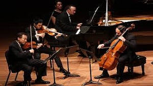

Classical Music

Classical music is art music produced or rooted in the traditions of Western music, including both liturgical and secular music. The term "classical music" has two meanings which includes all Western art music from the Medieval and also the specific art of Mozart and Haydn
Rock Music
Rock music is a genre of popular music that originated as "rock and roll" in the United States. Rock music includes jazz, classical and other musical sources.Musically, rock has centered on the electric guitar, usually as part of a rock group with electric bass guitar and drums.
Folk Music
Folk music includes both traditional music and the genre that evolved from it during the 20th century folk revival. The term is often applied to music that is older than 19th Centuary. Some types of folk music are called world music as Every country has its own traditional music.
European Music
The culture of Europe is rooted in the art, architecture, music, literature, and philosophy that originated from the European cultural region. European culture is largely rooted in what is often referred to as its "common cultural heritage".It includes Euro-pop and Euro-disco.
Instrumental Music
An instrumental is a musical composition or recording without lyrics, or singing, although it might include some inarticulate vocals, such as shouted backup vocals in a Big Band setting. The music is primarily or exclusively produced by musical instruments which soothes our soul.
Gospel Music
Gospel music is a music genre in Christian music. The significance and even the definition of gospel music varies according to culture and social context. Its main purpose is to spread the word of God and to preach the good news which saves people and lead us into Eternal Life.